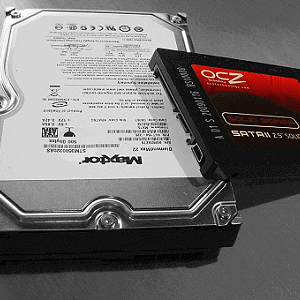

Składamy komputer. Dobór dysku twardego ciąg dalszy.
Dobieramy dysk twardy do naszego komputera. Bierzemy pod lupę dysk SSD. Omówimy również złącza dysków twardych. Składamy komputer krok po kroku

Aby powrócić kliknij baner.
Jaki dysk SSD? Dysk półprzewodnikowy.
SSD – dysk półprzewodnikowy (ang. Solid State Drive) – dyski budową przypominające pamięci flash (tak jak pendrive czy karty pamięci). Cechuje je to, że są zdecydowanie szybsze od standardowych dysków HDD, lżejsze, mniejsze i maksymalnie ciche. Same plusy, jednak za odpowiednią cenę, no gigabajt takiego dysku jest wielokrotnie droższy.
Kiedy decydujemy się na dysk SSD? SSD przydaje się tak naprawdę zawsze. Zainstalowanie systemu operacyjnego na tym dysku pozwala nam na rozruch komputera w czasie kilku sekund, zamiast kilkudziesięciu. Koniec z czasami, kiedy można było wcisnąć „power” i pójść sobie zrobić herbatę. Po drugie SSD przyspiesza wszystkie operacje na plikach, kopiowanie, przenoszenie, instalacje, czy ładowanie do pamięci. Dlatego instalujemy na nim programy, które denerwują nas monstrualnie długim czasem ładowania, czy też gry, w których ładowanie poziomów wywołuje u nas senność. W zasadzie jedynym przypadkiem, przy którym nie proponowałbym inwestycji w SSD jest kiedy składamy budżetowy sprzęt, a sami jesteśmy cierpliwi i nie przeszkadza nam dodatkowy czas oczekiwania na wszystko.
Jakie modele wybrać? Wśród najbardziej polecanych i często kupowanych modeli znajdują się:
Kiedy decydujemy się na dysk SSD? SSD przydaje się tak naprawdę zawsze. Zainstalowanie systemu operacyjnego na tym dysku pozwala nam na rozruch komputera w czasie kilku sekund, zamiast kilkudziesięciu. Koniec z czasami, kiedy można było wcisnąć „power” i pójść sobie zrobić herbatę. Po drugie SSD przyspiesza wszystkie operacje na plikach, kopiowanie, przenoszenie, instalacje, czy ładowanie do pamięci. Dlatego instalujemy na nim programy, które denerwują nas monstrualnie długim czasem ładowania, czy też gry, w których ładowanie poziomów wywołuje u nas senność. W zasadzie jedynym przypadkiem, przy którym nie proponowałbym inwestycji w SSD jest kiedy składamy budżetowy sprzęt, a sami jesteśmy cierpliwi i nie przeszkadza nam dodatkowy czas oczekiwania na wszystko.
Jakie modele wybrać? Wśród najbardziej polecanych i często kupowanych modeli znajdują się:
- Kingston V300 120GB – około 180 złotych
- GOODRAM CX100 120 GB – około 200 złotych
- Samsung 850 EVO 250GB – około 380 złotych
- Crucial MX200 250 GB – około 400 złotych
- Kingston HyperX Savage 480 GB – około 800 złotych
- Samsung SSD 850 PRO 512 GB – około 1000 złotych
Uwaga! Istnieje jeszcze pośredni typ dysku o nazwie SHDD. Panuje błędne przekonanie, że jest on czymś pomiędzy HDD a SSD, na co często nabierają się kupujący. Tak naprawdę jest to HDD z wydzielonym kawałkiem miejsca działającym jak SSD. Przykładowo dysk 1TB z szybszym fragmentem o pojemności 8GB, co daje nam (w teorii) 992GB HDD i 8GB SSD.
Jakie złącza posiadają dyski?
Najczęściej wykorzystywanym standardem na dzień dzisiejszy jest SATA, którego najnowsza ewolucja oznaczona jest jako SATAIII i pozwala na przepustowość rzędu 6GB/s. Standard ten wykorzystywany jest zarówno przez dyski HDD jak i SSD.
Numerem 1 oznaczone jest złącze zasilania SATA, do którego podłączamy przewód z zasilacza. Numerem 2 natomiast oznaczone jest złącze transferujące dane. Za jego pomocą łączymy elastycznym przewodem dysk z płytą główną. W standardzie SATA identyczne złącza posiadają dyski HDD, SDD a także napędy optyczne jak DVD-ROM.
Dla HDD występuje jeszcze, niedostępny w sprzedaży lecz ciągle spotykany w bardzo starych komputerach format ATA. Popularnie nazywany „taśmą” ze względu na kształt przewodu. Zasilanie doprowadzane było za pomoczą złącza „molex”.
Dla SSD dodatkowo występują wersje, które możemy do komputera podłączyć poprzez USB 3.0 oraz specjalnie dedykowane złącze M.2. Zaletą tego pierwszego jest możliwość wykorzystania SSD jako dysk zewnętrzny, a drugiego jeszcze większa szybkość przepływu danych.
Dla HDD występuje jeszcze, niedostępny w sprzedaży lecz ciągle spotykany w bardzo starych komputerach format ATA. Popularnie nazywany „taśmą” ze względu na kształt przewodu. Zasilanie doprowadzane było za pomoczą złącza „molex”.
Dla SSD dodatkowo występują wersje, które możemy do komputera podłączyć poprzez USB 3.0 oraz specjalnie dedykowane złącze M.2. Zaletą tego pierwszego jest możliwość wykorzystania SSD jako dysk zewnętrzny, a drugiego jeszcze większa szybkość przepływu danych.
5.Dysk twardy
